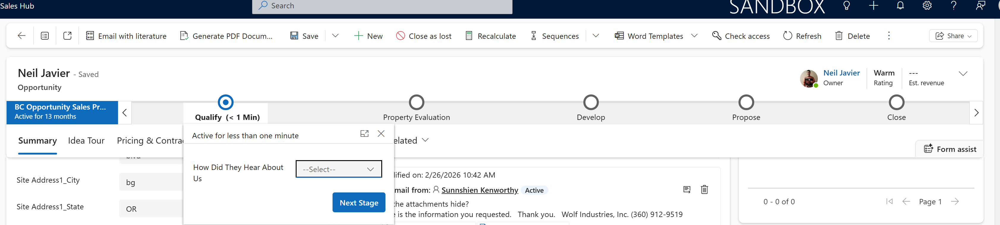
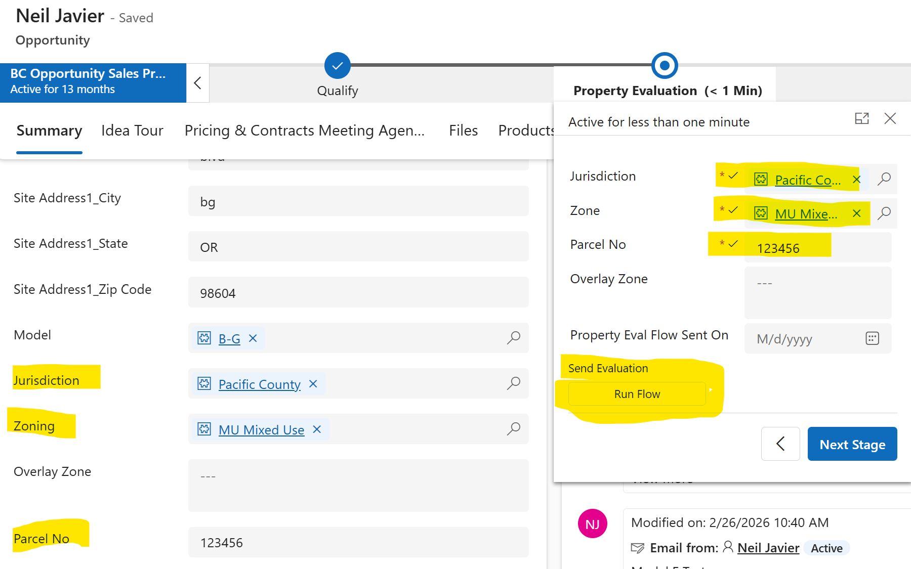
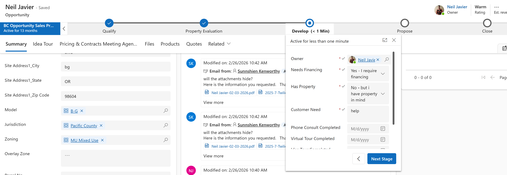
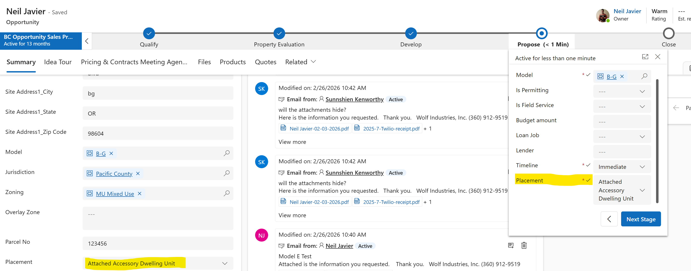
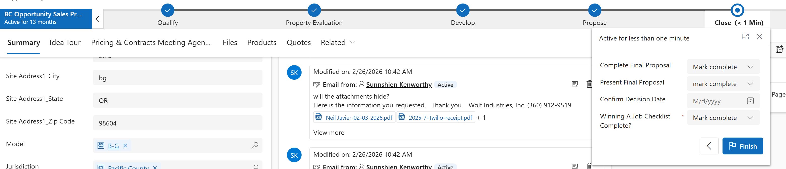

Project Summary
This project highlights a Business Process Flow used in Microsoft Sales Hub to guide Opportunity records through a structured sales process. The flow helps users collect required information, move through key stages, and trigger follow-up automation at the right point in the customer journey.
Guided Sales Process
The Business Process Flow gives the sales team a clear path through the Opportunity process, including stages such as Qualify, Property Evaluation, Develop, Propose, and Close. Each stage captures important information before the user moves forward.

Property Evaluation Stage
In the Property Evaluation stage, the user confirms property-specific information such as Jurisdiction, Zone, and Parcel Number. These values are also reflected on the Opportunity record, keeping the main form and the process stage aligned.

Flow Triggered From the Business Process Stage
Once the Jurisdiction and Zone are available, the user can run a flow from the Business Process Flow stage. The flow sends the customer an email with property information specific to their jurisdiction and zone, helping ensure the customer receives the correct local guidance.
Confirmation Tracking
After the flow runs, the Opportunity is updated with the date the property evaluation information was sent. This creates visibility for the team and provides a clear record that the customer received the jurisdiction-specific information.
Develop Stage
The Develop stage captures additional sales qualification details such as financing needs, property ownership, customer needs, and consultation progress. This helps the sales team maintain consistent discovery information before moving the Opportunity forward.

Propose Stage
The Propose stage captures proposal-related details such as model, permitting, field service, timeline, and placement. This supports a more complete handoff before the final proposal and closing activities.

Close Stage
The Close stage helps verify final checklist items before the Opportunity is closed. This supports consistency by requiring important closing steps to be completed before the process ends.

Business Impact
This Business Process Flow improves sales consistency, reduces missed steps, and connects stage-based data collection with automation. It helps the sales team send more accurate customer information, track when key communications are sent, and move Opportunities through a repeatable process.
Skills Demonstrated
Business Process Flows, Microsoft Sales Hub customization, Dataverse Opportunity records, stage-gated process design, required stage fields, Power Automate integration, customer email automation, process tracking, and sales workflow design.